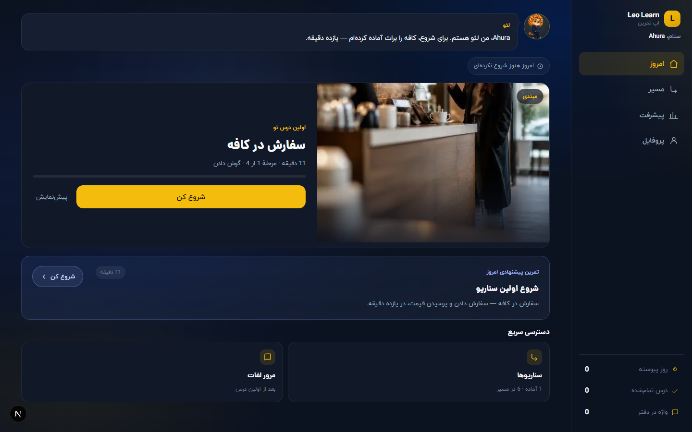
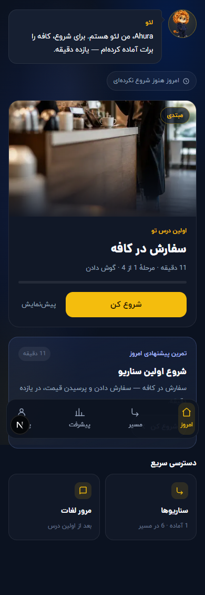

بازطراحی صفحهٔ خانه Leo Learn بر پایهٔ تحلیل وب
صفحهٔ «امروز» الان همهچیز را نشان میدهد و به همین دلیل هیچچیز را برجسته نمیکند. کاری که Duolingo و بقیه در این سالها انجام دادهاند ساده است: خانه یک قدم بعدی را انتخاب میکند، آن را تبدیل به تنها دکمهٔ صفحه میکند، و پیشرفت را طوری نشان میدهد که نیمهکاره ماندن آزار بدهد. این صفحه سه چیز دارد: نقد صفحهٔ فعلی، اصولی که در وب پیدا شد، و ماکت زندهٔ پیشنهاد.
اینها را از روی کد و اسکرینشات واقعی صفحه بیرون کشیدم، نه از حس کلی. هر مورد یک جای مشخص در فایل دارد.


موبایل ۳۹۰px
نوار پایین روی کارت «تمرین پیشنهادی» افتاده و دکمهاش را میپوشاند. در همین عرض، عکس درس تقریباً نیمی از صفحهٔ اول را گرفته و تنها دکمهٔ واقعی صفحه به پایینترین قسمتی رانده شده که کاربر باید برایش اسکرول کند.
دکمهٔ طلایی روی کارت درس و دکمهٔ آبی روی «تمرین پیشنهادی» هر دو به یک درس میروند. وقتی دو راه هماندازه وجود دارد، کاربر انتخاب نمیکند؛ معطل میشود.
تصویر کافه بزرگترین عنصر صفحه است و هیچ اطلاعاتی حمل نمیکند. این فضای گران باید صرف «کجای درس هستم» و «چه چیزی منتظر من است» شود.
▲۰ روز پیوسته، ۰ درس، ۰ واژه. کاربر تازه هیچ حلقهای برای بستن نمیبیند. اثر زایگارنیک وقتی کار میکند که چیزی نیمهکاره باشد، نه وقتی همهچیز صفر است.
این جمله وضعیت را گزارش میکند ولی هدفی نمیگذارد. کاربر نمیداند «کافی» یعنی چه. dailyMinutes در پروفایل هست و در خانه استفاده نمیشود؛ همان باید به هدف روزانه تبدیل شود.
«مسیر» یک تب جداست، پس خانه عملاً یک منو است. در Duolingo خودِ خانه مسیر است؛ کاربر هیچوقت لازم نیست بپرسد «الان کجای مسیرم؟».
سه ردیف عددی در ستون کنار با برچسب و آیکن. همان چیزی که تحلیل قبل/بعد صفحهٔ زبانآموزی «کارنامه» صدایش میکند: عددها باید شمارندهٔ ساده باشند، نه فهرست گزارش.
در موبایل، نوار ناوبری وسط کارت «تمرین پیشنهادی» نشسته و دکمهاش را میپوشاند. این فقط فاصلهٔ پایین محتواست، ولی همان است که صفحه را ارزان نشان میدهد.
هر اصل با یک نمونهٔ واقعی و یک قاعدهٔ قابل اجرا برای Leo. ترتیب، ترتیب اهمیت است.
بازطراحی ۲۰۲۲ دوا لینگو کل درخت مهارتها را حذف کرد و جایش یک مسیر خطی گذاشت. دلیلش این بود که کاربر نباید بین گزینهها انتخاب کند؛ باید مطمئن باشد قدم بعدی «بهترین قدم» است. تحلیل قبل/بعد هم همین را میگوید: «یک فهرست میگوید این تکلیف توست، یک مسیر میگوید تو اینجایی.»
برای Leo: نوار گامهای همان درس (گوش دادن ← انتخاب ← ساختن جمله ← گفتوگو ← نتیجه) باید روی خودِ خانه باشد، نه فقط داخل درس.
دکمهٔ «شروع» بهشکل حبابی روی گرهٔ جاری مینشیند و تنها عنصر کلیککردنیِ آن ناحیه است. بقیهٔ صفحه سلسلهمراتب دارد: یک مقصد فعال، یک عمل واضح، و چند مقصد همیشگی پایین صفحه.
برای Leo: همهٔ دکمههای طلایی خانه حذف شوند جز یکی. آن یکی هم برچسبش «شروع کن» نباشد؛ «شروع کنیم · ۳ دقیقه» باشد تا هزینهٔ شروع معلوم شود.
دادهٔ خود دوا لینگو: کاربری که به زنجیرهٔ ۷ روزه میرسد، ۲٫۴ برابر بیشتر احتمال دارد فردا هم برگردد. زنجیره یک عدد است که کاربر مالکش میشود و از دست دادنش را «ضرر» حساب میکند، نه «صرفهجویی وقت».
برای Leo: زنجیره باید از روز اول دیده شود، حتی وقتی صفر است — با یک وعدهٔ مشخص («فردا ۲ روزه میشود») نه یک عدد خالی.
کارهای نیمهتمام بیشتر از کارهای تمامشده در ذهن میمانند. دوا لینگو با هدف XP ناتمام، زنجیرهٔ زنده و مسیر نیمهطیشده همین را هدف میگیرد. رینگهای اپل واچ هم همین کار را میکنند و طبق بررسیها ۳۰٪ ثبات بیشتری میسازند.
برای Leo: سه کوئست کوچک روزانه («یک درس را شروع کن»، «۵ واژه»، «۳ دقیقه گوش بده») که هر کدام یک نوار پیشرفت نیمهپر دارند. حلقههای باز، نه دیوار صفر.
نسخهٔ درست همان صفحه: بهجای یک جملهٔ ۹ پیکسلی پر از آمار، چهار شمارندهٔ ساده (زنجیره، جواهر، جان) در بالا. عدد میماند، ولی بهشکل چیزی که با یک نگاه خوانده میشود و «مال تو» بهنظر میرسد.
برای Leo: زنجیره، هدف امروز، واژهها — بهشکل سه شمارندهٔ کوچک با آیکن، در یک نوار باریک بالای صفحه.
منبع: همان تحلیل قبل/بعد
همان اطلاعات هست؛ فقط جای هر چیز و وزنش عوض میشود. ترتیب از بالا: وضعیت، لئو، درس جاری، کوئستها، قدم بعد.
لئو
آهورا، کافه آماده است. امروز فقط مرحلهٔ گوش دادن — سه دقیقه، بعدش را میسازیم.
سفارش در کافه · A1
کوئستهای امروز
۰ از ۳خرید در سوپرمارکت
قدم بعد در مسیر · بعد از کافه باز میشود
ساختار یکی است؛ فقط کارت واحد افقی میشود و کوئستها زیر آن سهستونی. ستون ناوبری راست همان AppShell فعلی میماند، بدون ردیفهای آمار.
لئو
آهورا، امروز فقط مرحلهٔ گوش دادن — سه دقیقه.
سفارش در کافه · A1
یک مرحله
واژهٔ تازه
بلند تکرار
قدم بعد در مسیر
خرید در سوپرمارکت
بعد از کافه باز میشود · A1
آشنایی با یک نفر تازه · A1
رزرو هتل · A2
آنچه کاربر را مشتاق نگه میدارد بیشتر در لحظهٔ بازخورد است تا در چیدمان. سه لحظه که باید ساخته شوند، هر سه از دادهای که همین حالا در Progress هست.
یک نوار نتیجه که بالا میآید: «گوش دادن تمام شد · ۳ دقیقه ثبت شد» و حلقهٔ هدف یکسوم پر میشود. گرهٔ بعدی روی مسیر روشن و بزرگ میشود. بدون این، پیشرفت نامرئی است.
«سفارش در کافه تمام شد — ۴ واژه به دفترت اضافه شد.» این دقیقاً همان روزی است که تب «مرور لغات» معنا پیدا میکند، پس پیوندش باید همینجا باشد، نه در دسترسی سریع.
زنجیره ۱ است. جملهٔ لئو عوض میشود: «دیروز شروع کردی؛ امروز فقط یک قدم تا ۲ روزه شدن.» عدد کوچک را با یک وعدهٔ مشخص بزرگ میکند — همان چیزی که در دادهٔ دوا لینگو زنجیرهٔ ۷ روزه را ۲٫۴ برابر میکند.
هر مرحله جدا قابل دیدن است. مرحلهٔ ۱ و ۴ بیشترین اثر را دارند؛ اگر وقت کم بود، از همانها شروع کن.
بخش «تمرین پیشنهادی» و «دسترسی سریع» از page.tsx بروند. همین یک تغییر، صفحه را از دو دکمه به یک دکمه میرساند.
در dashboard-core.ts یک تابع dailyGoalState(progress, dailyMinutes, date) اضافه شود که دقیقهٔ امروز، هدف و نسبت را برگرداند. تستهایش کنار همان فایل، مثل بقیه.
دقیقهٔ امروز باید از فعالیتهای ثبتشده حساب شود؛ سادهترین راه: مجموع minutes سناریوهایی که updatedAt آنها امروز است، بهعلاوهٔ یک تخمین برای مرور.
سه کوئست ثابت که همه از Progress قابل محاسبهاند: مرحلهٔ تمامشدهٔ امروز، واژههای lastSeenAt امروز، و دقیقهٔ گوش دادن. هیچ state تازهای لازم نیست.
کامپوننت تازهٔ StepRoad که همان stepIndex و totalSteps موجود را میگیرد. صفحهٔ /App/path هم میتواند از همین کامپوننت استفاده کند تا دو زبان بصری نسازیم.
در scenario/[slug]/lesson، بعد از هر گام یک نوار نتیجه. اگر سادهتر خواستی: فقط گرهٔ بعدی در مسیر با انیمیشن روشن شود و حلقهٔ هدف در نوار بالا پر شود.
به AppShell.module.css یک padding-bottom به اندازهٔ ارتفاع نوار روی .main. این باگ را همین حالا میشود جدا درست کرد.